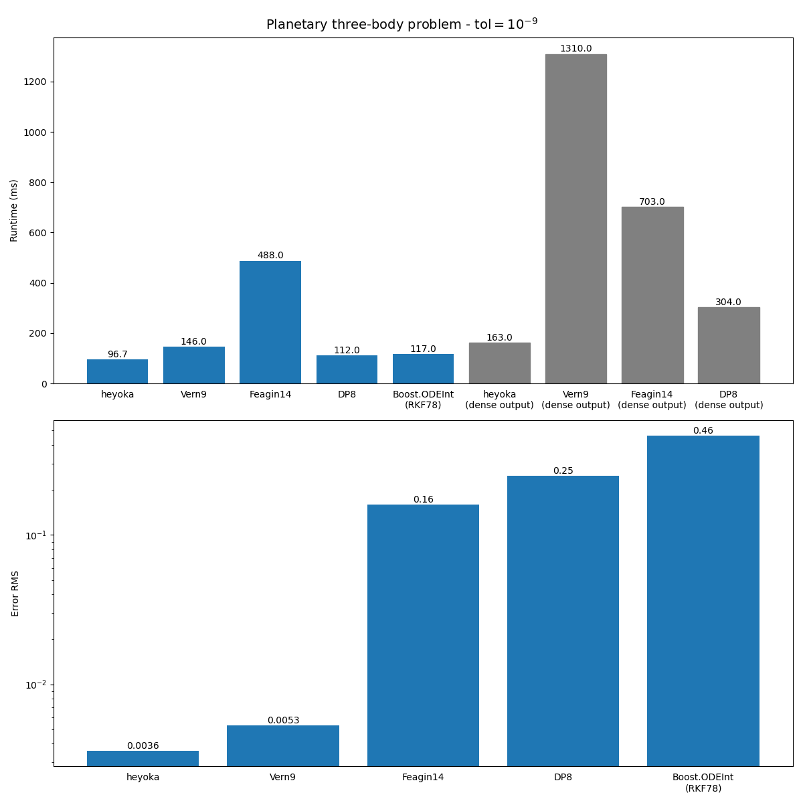

Benchmarks#
In this section we provide a few performance comparisons between heyoka and other popular ODE integration packages. Specifically, we compare heyoka to:
DifferentialEquations.jl, a popular Julia library implementing several ODE solvers. In these benchmarks, we will be using explicit Runge-Kutta solvers such as
Vern6,Vern8,Vern9,Feagin14,DP8, etc. (see here for a list of ODE solvers available in DifferentialEquations.jl);Boost.ODEInt, a C++ package implementing various algorithms for the solution of systems of ODEs. In these benchmarks, we will be using the explicit Runge-Kutta-Fehlberg 78 solver;
the
IAS15integrator from REBOUND, a popular N-body integration package. Like heyoka,IAS15is a high-precision non-symplectic integrator with adaptive timestepping capable of conserving the dynamical invariants over billions of dynamical timescales.
Note that the integrators from DifferentialEquations.jl by default enable dense output, which however incurs in a heavy computational cost. While heyoka also supports dense output, this feature is opt-in and its performance impact is much more limited. In these benchmarks, we will be testing both with and without dense output.
All benchmarks were run on an Intel Xeon Platinum 8360Y CPU. More benchmark results are available in the heyoka paper. The benchmarks’ source code (for both heyoka and the other tested libraries) is available in the github repository.
The planetary three-body problem#
Here we will numerically integrate a specific case of the three-body problem in which the three particles are the Sun, Jupiter and Saturn, all represented as point masses attracting each other according to Newtonian gravity. The initial conditions are taken from this paper, and the integration is run for a total of \(10^5\) years. For the DifferentialEquations.jl integrators and heyoka, the test is run both with and without dense output. When dense output is enabled, the result of the integration over \(5 \times 10^5\) equispaced time grid points is requested.
In order to measure the accuracy of the integration, we will also compare the final state of the system with the result of a numerical integration in quadruple precision with a tolerance of \(10^{-30}\).
Let us see first the results for an error tolerance of \(10^{-15}\):
We can see how, without dense output, heyoka is at least 3 times faster than any other tested integrator. When dense output is requested (gray bars),
heyoka’s runtime increases by \(\sim 50\%\), whereas for the other integrators the performance hit is substantially larger. Performance-wise,
Boost.ODEint is comparable to Vern9 (note that the RKF78 integrator from Boost.ODEInt does not support dense output).
From the point of view of the integration accuracy, we can see how heyoka has the lowest relative error (with respect to the quadruple-precision integration) among the tested integrators.
Note that, even if the error tolerance for the integration is set to \(10^{-15}\), the error at the end of the integration is of the order of \(10^{-9}\). This is to be expected, as the error on the state variables accumulates as (at least) \(t^{\frac{3}{2}}\) (a result known as Brouwer’s law).
Let us now see the results for an error tolerance of \(10^{-9}\):
Whereas heyoka is still faster than the other integrators, at this higher integration tolerance the performance advantage is smaller.
The integration accuracy of both heyoka and Vern9 is of the order of \(10^{-3}\). The other integrators feature
a much worse accuracy.
Finally, let us see the results for an error tolerance of \(10^{-6}\). In this test, we will replace Feagin14
with Vern6, which is supposed to be more efficient at high tolerances:
At low accuracy, heyoka performs similarly to DP8 and RKF78 without dense output. When dense output is requested,
heyoka retains a substantial performance advantage.
The outer Solar System#
In this benchmark, we will integrate the motion of the outer Solar System for 1 million years. We define the outer Solar System as the 6-body problem consisting of the Sun, Jupiter, Saturn, Uranus, Neptune and Pluto, all considered as point masses attracting each other according to Newtonian gravity. The initial conditions are taken from this paper.
For this benchmark, we will be comparing heyoka to the IAS15 integrator from REBOUND.
Here are the results:

We can see how heyoka is about 5 times faster than IAS15 in this specific test. A detailed performance comparison with IAS15
is available in the heyoka paper.
Event detection#
In this benchmark we measure the overhead of heyoka’s event detection system and compare it to
the Vern9 and DP8 integrators from DifferentialEquations.jl.
We consider the dynamical system studied by Hénon and Heiles in a
famous numerical experiment investigating
the existence of additional integrals of motion in axisymmetric potentials. The differential equations are:
with initial conditions
Our objective is to compute the Poincaré section of the solution on the \(\left( y,v_y \right)\) plane. This can be accomplished by setting up the event equation
to detect when the solution crosses the \(\left( y,v_y \right)\) plane. Like in the original paper, we impose the additional constraint that the event direction must be positive (i.e., we only detect crossing of the plane from below). The total integration time is \(2000\) time units and the tolerance is set to \(10^{-15}\). For both heyoka and the DifferentialEquations.jl integrators, we measure the runtime both with and without event detection.
Here are the results:

We can see how heyoka’s event detection system has a much lower overhead than the event detection system in DifferentialEquations.jl. heyoka’s event detection system combines the free dense output from Taylor’s method with state-of-the-art polynomial root finding techniques to provide an event-detection methodology which is both rigorous and computationally efficient. By contrast, DifferentialEquations.jl adopts the approach of checking for sign changes in the event equation using the interpolant of the solution within a timestep at discrete points. Note that this approach is not rigorous, in the sense that if the event equation has two zeroes between the interpolation points the event will be missed. By contrast, heyoka’s approach does not suffer from this issue.
Back & forth#
In this benchmark, we will first integrate an ODE system forward in time from \(t_0\) to \(t_1\). We will then invert the time direction to return back to the initial time \(t_0\). The state vector at the end of this process should closely match the initial conditions.
In order to keep things simple, we will be using the equations of the simple pendulum in SI units,
and we choose \(t_0 = 0\,\mathrm{s}\) and \(t_1 = 1000\,\mathrm{s}\). Our goal is to
quantify the integration error, measured as the magnitude of the difference between the initial conditions
and the state vector at the end of the integration. Let us see the results for heyoka,
Vern9 from DifferentialEquations.jl and the RKF78 integrator from Boost.ODEInt:
We can see how heyoka is able to return to the initial conditions much more accurately than the other two integrators.
heyoka’s superior accuracy in this test is due in large part to the fact that heyoka adopts internally an extended precision representation for the time coordinate based on double-length arithmetic. This approach allows to drastically reduce the loss of precision occurring when the time coordinate is updated at the end of a timestep: while the time coordinate grows larger throughout the integration, the (adaptive) step size remains roughly constant in magnitude, thus resulting in a gradual accumulation of roundoff error. Representing the time coordinate in extended precision allows to drastically curb this phenomenon, which is particularly visible in long-running numerical integrations.
Extended and arbitrary precision#
heyoka supports computations both in extended precision and arbitrary precision. Taylor integrators are particularly well-suited for high-precision applications because they can freely choose the optimal order for a given tolerance. In contrast, fixed-order methods must reduce the integration timestep in order to achieve higher accuracy, which is more computationally expensive than increasing the integrator’s order.
In this first test, we perform a numerical integration of the simple pendulum using
quadruple-precision
arithmetic, with a tolerance set to \(10^{-34}\) (i.e., close to the epsilon). heyoka’s
runtime is compared to the runtime of the Feagin14 from DifferentialEquations.jl.
Both libraries are using the quadruple-precision math library
from GCC under the hood.
We can see how in this test heyoka is about 20 times faster than Feagin14.
We can move to even higher precisions with the help of arbitrary-precision arithmetic. heyoka uses the MPFR library for multiprecision floating-point computations under the hood. DifferentialEquations.jl can also use MPFR (via the BigFloat type) or, alternatively the Arb library (via the ArbNumerics.jl package).
Here are the results of a numerical integration of the simple pendulum with a 256-bit significand and a tolerance of \(10^{-77}\):
We can see how heyoka’s performance lead has extended to several orders of magnitude.
heyoka’s superior performance in this benchmark is due both to the algorithmic advantages of Taylor integrators (as discussed earlier) and to the fact that heyoka’s stepper function does not perform any memory allocation. That is, contrary to the Julia integrators, the storage for all the multiprecision numbers employed in the stepper function is pre-allocated on the stack, rather than being dynamically-allocated on-demand for every multiprecision operation.
Dense output fidelity and stability#
As explained in the dense output tutorial, Taylor integrators provide dense output (almost) for free in the form of the coefficients of the Taylor series of the solution of the ODE. By contrast, in most other integration methods (such as the Runge-Kutta family) dense output is computed via polynomial interpolation.
Polynomial interpolation can sometimes suffer from numerical instability,
especially in high-accuracy applications. In this test, we are integrating
a simple Keplerian circular orbit with tolerance \(10^{-12}\), and asking
the numerical integrator for the dense output in a time grid of 1000 equispaced
points within the \(\left[0, 1\right]\) time interval. This plot
shows the integration error (computed against the analytical solution)
for heyoka and the Vern8 integrator from DifferentialEquations.jl
(an explicit Runge-Kutta method with lazy 8th order interpolant):
We can see how for Vern8 the dense output between the integration steps
suffers from a noisy error that often exceeds the nominal tolerance of \(10^{-12}\), peaking
to a local maximum right at the end of each integration step. This phenomenon
disappears when switching to a higher-precision datatype, strongly suggesting that the
behaviour is caused by numerical instability. The noisy and jittery behaviour of the dense
output can be problematic when trying to solve inversion problems in high-accuracy setups
(e.g., in precise orbit modelling/determination).
heyoka’s dense output, by contrast, has an error bounded well below the nominal tolerance of \(10^{-12}\),
and it does not suffer from the noisy behaviour experienced by Vern8. Indeed, in Taylor integrators,
the dense output is calculated directly from the same formula (i.e., the Taylor series)
used to compute the state at the end of the timestep, and it is thus guaranteed to be consistent
with the state of the system at the beginning/end of the timesteps.